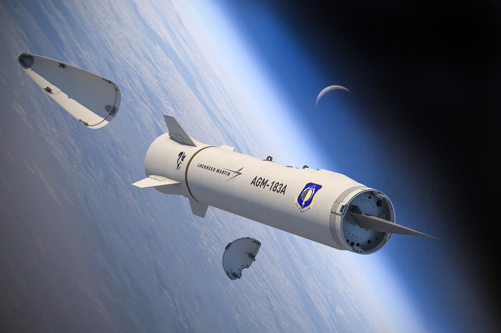
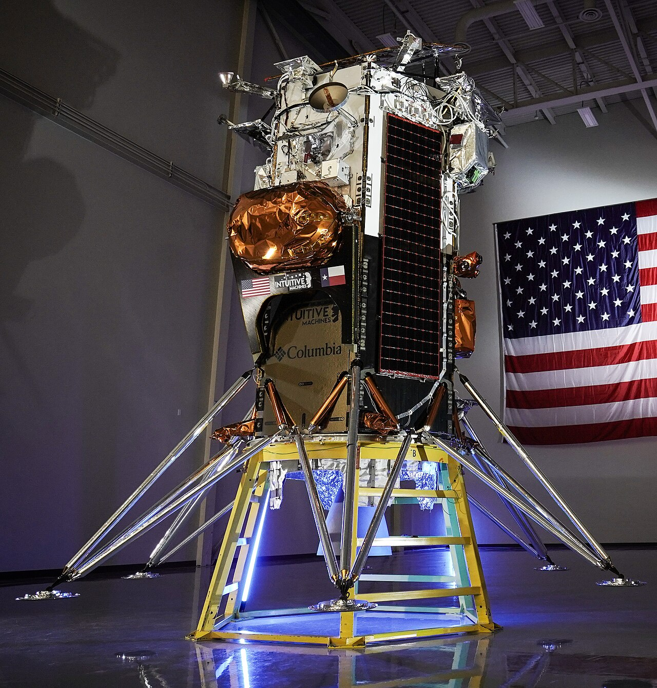
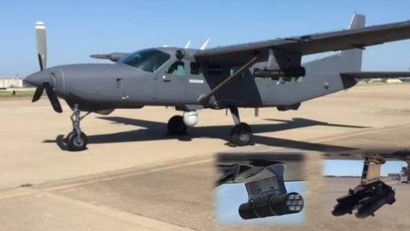
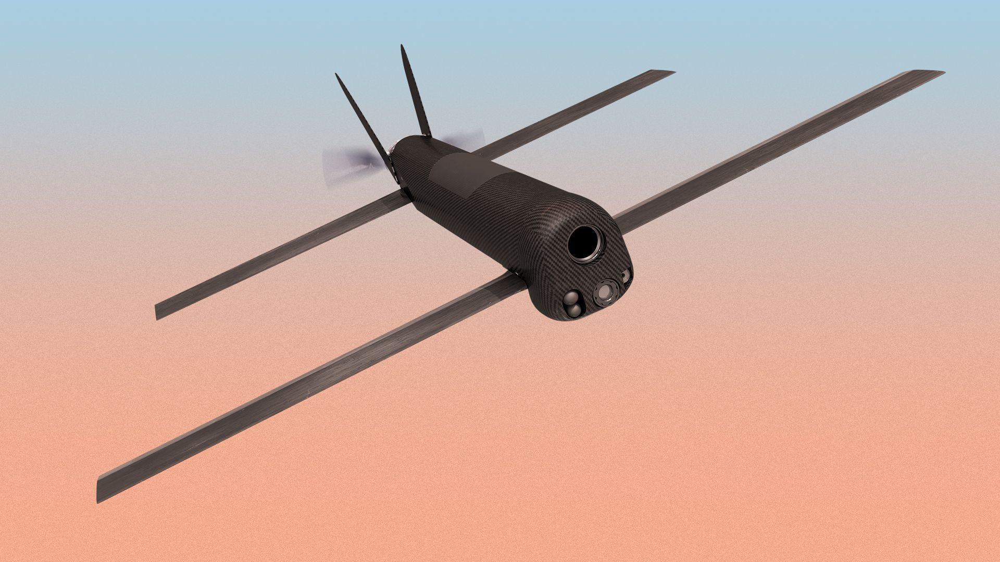
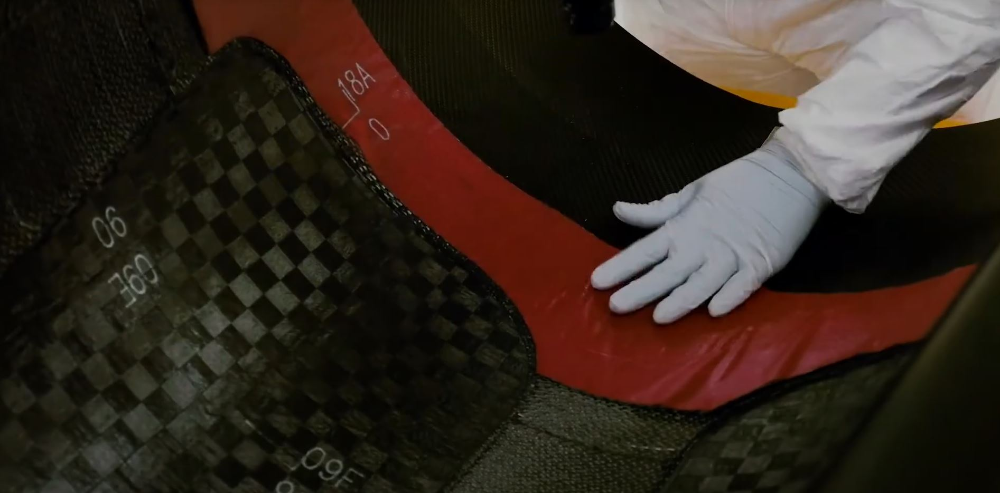
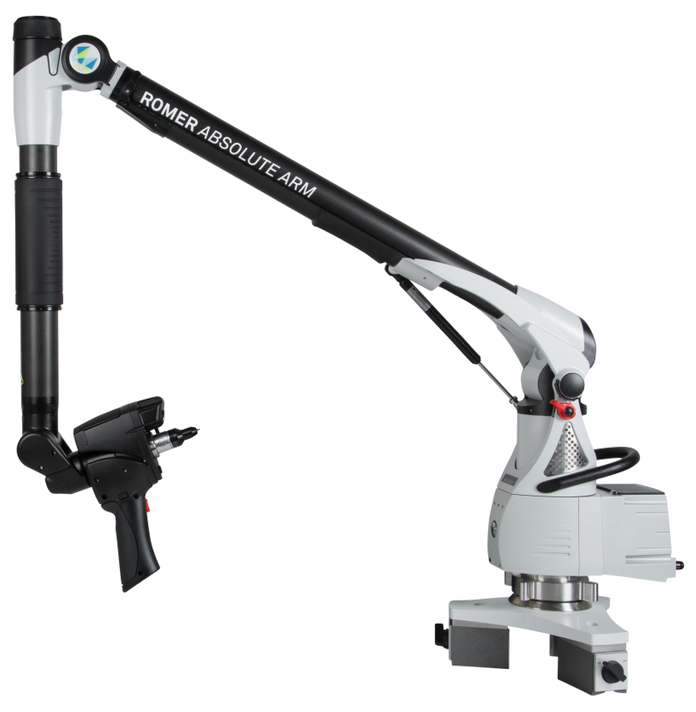
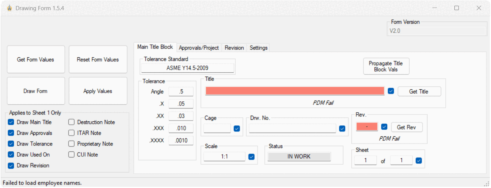
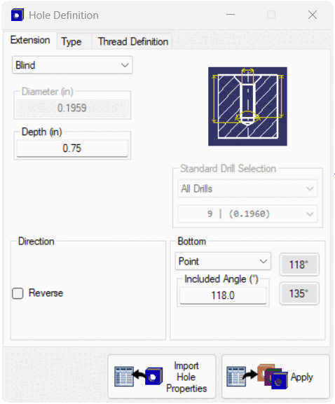
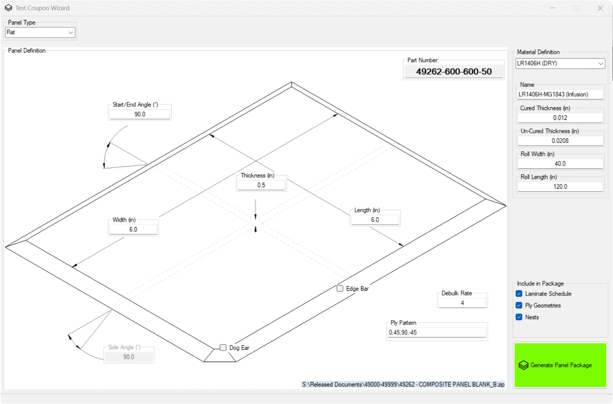
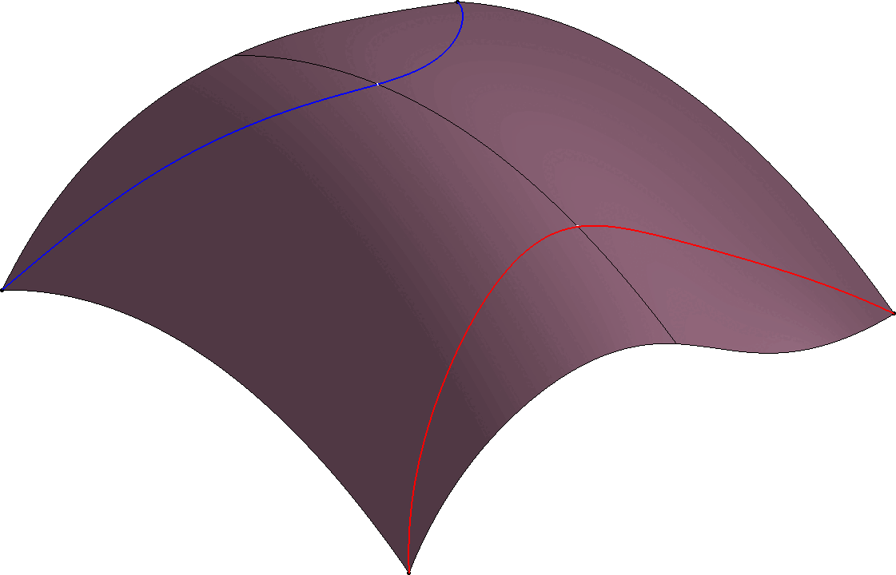

01
Composite Design
Aerospace structures, complex composite geometry, laminate definition, ply development, producibility, bonded assemblies, sandwich structures, AFP and tape-wrapped structures.
COMPOSITE DESIGN & MANUFACTURING ENGINEER
Aerospace composite engineer with extensive experience spanning design, tooling, manufacturing, metrology, dimensional engineering, and engineering automation.
PROFILE
I specialize in the space where engineering requirements, complex geometry, manufacturing processes, and dimensional control intersect.
My experience spans the full lifecycle of composite hardware—from concept and part design through tooling, fabrication, inspection, troubleshooting, and production. I've worked extensively with aerospace structures, bonded assemblies, complex composite geometry, and difficult manufacturing problems.
I'm particularly effective when the solution isn't obvious: determining how to fixture and bond complex geometry, developing datum and inspection strategies, compensating tooling for spring-in, or creating the automation needed to make a repetitive engineering process practical and repeatable.
TECHNICAL CAPABILITIES
A combination of design, manufacturing, metrology, and automation experience allows me to approach problems from more than one direction.
Aerospace structures, complex composite geometry, laminate definition, ply development, producibility, bonded assemblies, sandwich structures, AFP and tape-wrapped structures.
Molds, trim fixtures, bonding jigs, assembly tooling, mandrels, bladder molding, vacuum bagging, clamping and indexing strategies, process development, and supplier tooling integration.
Laser scanning, portable CMM systems, hard probing, laser trackers, PC-DMIS, datum strategy, dimensional analysis, reverse engineering, and inspection-driven process improvement.
CATIA and Excel automation connecting design, manufacturing, inspection, documentation, and engineering data into repeatable workflows.
SELECTED WORK
A selection of aerospace programs, composite engineering work, dimensional engineering, and custom software developed throughout my career.
AEROSPACE PROGRAMS
Composite design and manufacturing experience across development and production hardware for a range of aerospace and defense applications.

Composite engineering supporting advanced aerospace and hypersonic hardware.

Composite structures and manufacturing engineering for advanced defense hardware.

Composite engineering experience supporting spaceflight hardware.

Composite manufacturing and engineering experience for aerospace and defense systems.

Composite structures and manufacturing experience supporting advanced systems.

COMPOSITE ENGINEERING
My work routinely crosses the boundary between CAD and manufacturing. Composite geometry has to account for ply development, tooling access, bonding, cure behavior, trimming, inspection, and the realities of production.
That experience informs how I approach design: not simply creating geometry that satisfies a drawing, but developing geometry that can actually be manufactured and verified.

METROLOGY
Dimensional engineering provides the feedback needed to understand how composite hardware actually behaves. My experience includes portable CMM systems, laser scanning, laser trackers, hard probing, datum strategy, and inspection data analysis.
Inspection data can then be used to diagnose manufacturing variation, develop compensation strategies, and improve future tooling and processes.
ENGINEERING AUTOMATION
Rather than generic software projects, these tools automate the repetitive and specialized work that occurs inside composite design, manufacturing, inspection, and engineering documentation.

01
A suite of CATIA automation tools designed to accelerate common composite design and engineering workflows.

02
Automated engineering drawing workflows designed to reduce repetitive documentation work and standardize output.

03
A specialized engineering tool for efficiently editing and managing hole geometry within composite design workflows.

04
Automated generation and preparation of composite test-coupon geometry and associated manufacturing layouts.

05
Geometry automation for creating controlled variable offsets across complex composite surfaces.
ENGINEERING TOOLKIT
ENGINEERING APPROACH
Composite engineering problems rarely exist in isolation. Geometry affects tooling. Tooling affects manufacturing. Manufacturing affects dimensional performance. Inspection reveals problems that may require changes upstream.
My experience across these disciplines allows me to work through that entire chain rather than treating each problem as an isolated task.
The result is practical engineering: solutions that can actually be built, inspected, repeated, and improved.
Understand the functional and dimensional problem.
Develop geometry, laminate, interfaces, and tooling.
Account for real-world processes and constraints.
Measure results and identify dimensional variation.
Feed manufacturing and inspection data back into design.
PROFESSIONAL EXPERIENCE
Formerly Systima Technologies, Inc. · Mukilteo, WA
Primary composite design and manufacturing engineering resource supporting aerospace and defense hardware across development and production programs.
A subsidiary of Ascent Aerospace · Bothell, WA
Designed composite manufacturing tooling from concept through modeling and drafting to Boeing and Airbus standards.
ENGINEERING AUTOMATION
I have developed a broad suite of CATIA and Excel automation tools designed around the repetitive work that actually occurs in composite engineering, manufacturing, and inspection.
The goal isn't automation for its own sake. The goal is to make engineering processes faster, more consistent, less error-prone, and easier to repeat.
Ply creation, templating, gridding, model cleanup, parameter management, property editing, drawing automation, and composite workbench workflows.
Automated checks and engineering tools designed to identify manufacturing concerns earlier in the design process.
Tools for measurement, inspection reporting, point-cloud processing, sampling, visualization, and engineering data extraction.
Excel integration, PDM workflows, standardized documentation, reporting, and engineering data extraction.
Minimum-bounding-box measurement, test-coupon generation, mass-hole editing, dynamic offsets, cure reporting, nesting, and automated visualization.
Engineering applications and automation using .NET, primarily VB with strong familiarity in C#, including SQL database integration.
TECHNICAL TOOLKIT
CATIA V5-6 · Composites Workbench · Reverse Engineering · .NET · VB · C# · SQL · Excel · PC-DMIS · SpatialAnalyzer · Virtek · G-Code · Adobe Creative Suite
Prepreg layup · Vacuum bagging · Autoclave cure · 5-axis routing · Wet layups · VARTM · RTM · SQRTM · Hot draping · Crush core · Bulk resin infusion · Compression molding · Winding · Tape wrapping
Mills · Lathes · Waterjet · Welding · Autoclaves · Hydroclaves · Ovens · Heated presses · High-temperature furnaces · Cutting tables · Virtek projection systems
Laser trackers · Laser scanning · Portable CMM / ROMER arms · Hard probing · GD&T · Datum strategy · Dimensional analysis · Reverse engineering
EDUCATION
Bachelor of Science in Plastics Engineering Technology
ABET Accredited · Academic Minor in Materials Science
Treasurer and Student Outreach Officer — WWU SAMPE/SPE Chapter
CONTACT
I'm always interested in discussing engineering challenges, composite design and manufacturing, technical opportunities, and interesting problems worth solving.
weagan22@gmail.com